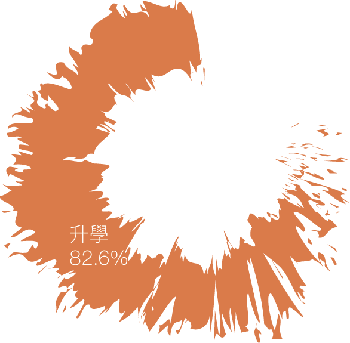
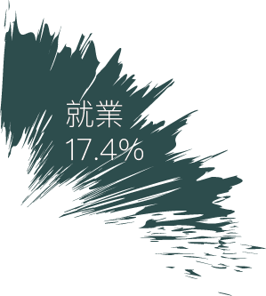
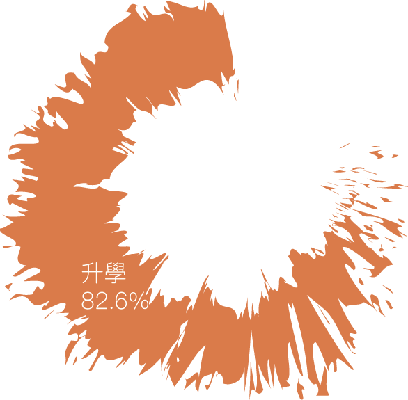
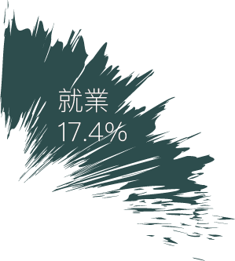

「敲牆壁就要吸一堆灰塵、在屋頂牽管線曬一整天太陽、休息日不確定，很多時候一個月30天都要工作。」世博企業有限公司老闆陳信榮從23歲退伍之後開始經營自己的水電行，至今已有43年，他認為，工作環境差、工時不穩定、工作內容乏味是年輕人不願意投入水電行業（註1）的原因。一樣是自己開店、有30年經歷的復升水電有限公司老闆蘇宗柚表示，平均薪水是一個月新台幣10萬元左右，最高曾高達30萬元，「以前比較辛苦，想賺多一點只好打牆、配管那些都自己來。」
陳信榮與蘇宗柚，同樣經營水電事業數十年，在人生半百的年紀，他們都感嘆：水電技師（俗稱水電工、水電師傅）正面臨年齡斷層的危機。
專業分殊化排擠生存空間 小包最艱困
根據勞動部勞動力發展署統計，水電相關證照的考照率十分穩定，以「乙級室內配線」證照（註2）的合格人數來看，大致呈上升的趨勢，但水電技師人數自民國102年以來卻是持續下降，近兩年來人數減少了約3000名，約十分之一。

由於現今企業垂直整合的現象比比皆是，舉例而言，大賣場在賣出家電時附帶越來越完善的售後服務，且因大賣場的定價比水電行便宜，民眾自然轉而向大賣場購買家電，形成一股拉力。這種專業分殊化造成傳統水電行的生存空間越來越小。
早期水電行主要收入來源為批發電料及參與工程，設立店面則是兼賣燈管、燈泡、水管等材料與冷氣、冰箱等家電，有時也順道維護街頭巷弄的水電工作，賺取額外收入。近年來隨著「特力屋」等大型工具材料連鎖店崛起，傳統水電行的運作以承包工程為主，像是蘇宗柚便曾包下一間教堂的修繕工程。國立政治大學勞工研究所專任教授成之約指出，過去水電技師在家庭生活中不可或缺，但隨著大賣場或燈具行都提供修繕服務，分工越來越細緻化、專業化，水電行能提供的服務越來越有限，「以前水電技師是全才，現在則是市場需求受到限制。」隨著需求變少，水電技師趨向以投入工地為主，也影響了年輕人投入的意願。
水電工作與其他建築工種（泥作、油漆、木工）有相同的特性——層層下包，最上游的為「大包」，例如水電顧問公司，主要以包大型工程為主，再下放小型工程給水電工程公司、水電營造公司等「中包」，陳信榮與蘇宗柚所開設的水電公司便屬此類別。在中包之下的是「小包」，便是「水電技師」個體，也是本專題討論的主要對象。他們並未隸屬於特定水電公司，工作型態多半透過接案子，工時、收入穩定性低。小包若要發展成中包，會有資本額、甲級證照等門檻，所以小包多以守住基層市場為主。


水電技師的技術訓練，主要管道有三，技職教育、政府的職業訓練局及「師徒制」。「師徒制」是指在師傅底下學習，等擁有一定水電知識後再自己去考證照，非科班出身也能當水電技師。世新大學社會發展研究所副教授陳信行表示，學徒通常希望拿到一定的薪水，「但師傅不一定給得起，所以傾向不帶學徒。」也因此造成產業缺少新血。
然而，若比較各行業受雇員工薪資，水電技師的薪水也有近四萬，早已打敗許多大學畢業生的起薪，還是鮮少年輕人願意投入。


升學風氣盛 年輕學子多盼作白領
本報對水電相關科系高職生所進行的問卷調查結果顯示，有82.6％的學生會在高職畢業後繼續升學而非就業，不願從事水電技術工的原因則以「工作勞累」為大宗，高達64.8％。另外，有36％的相關科系高職生對水電技術人員的工作有負面印象，包括工作辛苦勞累、收入不穩定；其中更有部分學生存在特定刻板印象，例如認為該職業「髒髒的」，屬低階工作。然而，也有16％的學生認為工作雖辛苦但收入佳、工作好找，屬於正向評價。
 



「你到徵才網站上看，哪一個學歷要求不是大學、碩博士？」技職教育平台「技職3.0」執行長黃偉翔說道，隨著時代變遷，大學之門敞開，也讓升學變得容易，現今社會升學熱的後果則為孩子較不願意踏入勞力密集的工作。
升學導向的現況可從近年居高不下的高職生升學率窺知，政大勞工所專任教授劉梅君表示，大多數年輕世代都擁有大專學歷，從事水電工作並不符父執輩的期待，以致畢業後入行意願大幅降低。民國70年到80年、大學教育尚未普及的年代，對水電技師這個職業較無成見。政大社會學系博士候選人鍾宜杰指出，此類工作的環境較差、對身體負擔也大，例如電匠在工作時可能須要長時間維持抬頭姿勢等，種種因素間接造成職業壽命較短。在不佳的勞動條件下，即使有機會賺進豐厚收入，許多青年仍對這個職業敬而遠之，轉而爭取大學文憑。
臺北市立木柵高級工業職業學校配管科老師郭錦榮表示，以公立高職來說，大部分的學生考證照還是為了升學，直接從事科系相關工作的並不多。就木柵高工配管科來說，只有大約5％的學生畢業後會自願出去工作，從事配管工程相關行業。
高職中，水電相關科為配管科、電機科與冷凍空調科；大專教學領域較廣，舉電機系為例，水電當中的「配線」只是電機系中的其中一個教學項目。目前，全台僅和春技術學院於電機系之下專設「水電工程專業技術組」。和春技院電機系副教授廖國清表示，系上多來自電機科與汽修科的高職生，許多學生高職讀完後之所以會選擇繼續升學，是因為大專畢業資格可以在業界取得較高階的職位，像是工地主任等；高職畢業可能只能從基本操作員做起，「要撐過三到五年的過渡時間。」因此，多數人選擇繼續升學而非高職畢業即就業。
欲緩解人力斷層 技術工勞動環境須改善
所有勞力取向的技術工，皆有缺工的現象。劉梅君表示，不僅是水電技師乏人問津，木工、裝潢油漆工、水泥工等也都有人力斷層問題。
年輕世代生長環境改變也是一大要素，黃偉翔指出，現在的年輕人從小都是滑著平板電腦長大的，長大之後他們容易傾向選擇坐辦公室處理資訊的工作，而不是勞力密集的作業。政府促進技職教育發展的政策中，勞動力發展署為了鼓勵青年就業，於102年開始推行的「明師高徒計畫」（註3），即俗稱的「師徒制」，將於今年終止。對於這個計畫的成效不彰，成之約表示，現在的年輕人因為教育程度提高、很在意工作環境，對工作的選擇也更多要求，自然不願投身水電工作。
要解決基層技術人員缺工，得從提升專業形象、薪資待遇、建立水電技師合作機制切入。
「台灣現在的問題不是能力不足，而是職業給人的刻板印象必須要打破。」成之約認為，從改善水電工作環境、提升其專業形象做起，如此自然就會有人想做這個工作，才可能解決後繼無人的現況。他建議水電技師走向更專精的路線、提升技術層次。
台灣常見的水電配管模式是須在灌漿前將管線埋入牆內，工人往往因此弄得灰頭土臉；世新大學社會發展研究所副教授陳信行表示，日本大多使用明管和輕鋼架，工地環境往往較乾淨，給人的形象也較專業。因著台灣人的美學觀，以及對鋼筋水泥的偏好，對輕隔間、輕鋼架較無法信任，因此很難跳脫目前的施工模式。
黃偉翔直言，勞動市場的轉型與勞動條件的改善是必要的，「你只能薪水加到有人願意來做為止。」成之約進一步指出，國外的水電技師薪資更高，且據其了解，他國相關人員的訓練，不僅是透過職業訓練來協助，技職教育體系、甚至終身教育都會一起參與。
專業分殊化、升學導向、社會觀感與勞動條件差等原因，導致年輕人甚少投入此類工作，進而出現年齡斷層。一種新興的、防止中游企業剝削利益的組織「合作社」相應而生（註4）。陳信行表示，現在水電技師接案很大一部分是靠運氣，且因上游包商營運需成本，往往水電技師被抽成的情況嚴重。若水電技師成立合作社，不僅可保障自身權益，也提升了議價能力及與政府協商政策的可能性。
- 註1：水電行業，「水」指排水、淨水的配管作業，「電」則是配電等線路的安置。
- 註2：證照依據困難程度高低分為甲、乙、丙三級，丙級證照是基礎能力，在應徵工作時較不具加分性；乙級證照在業界最為普遍，例如「乙級工業配線」與「乙級工業用管配管」證照；甲級證照則是成立水電公司的必照。
- 註3：「明師高徒計畫」運用訓練自主化、彈性化、個別化及長期訓練機制等特色，將民間師徒教導學習模式制度化，跳脫正規教育方式，透過嚴謹的適訓評估，由師徒間自主議定訓練內容，做為技術與經驗傳承之訓練管道，並促進青年就業。
- 註4：依據《合作社法》，合作社共分為十二種，此處所提之「合作社」尤指兩種：一是需要技術工的「勞動合作社」，另一為須自備相關器具的「生產合作社」。例如多位個體水電基層技術人員以合作社的名義一起去標大的案子，就不用受限於中包水電公司，不僅能夠賺更多，也能有效提升勞動尊嚴。